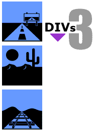
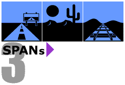
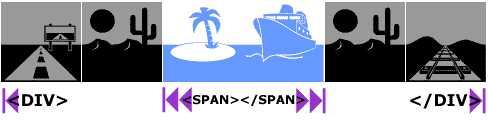

|
| ||
|
| ||
Nadja Vol Ochs
Design Consultant
Microsoft Corporation
February 23, 1998
Updated: March 4, 1998
The following article was originally published in the Site Builder Magazine (now known as MSDN Online Voices) "Site Lights" column.
The two samples on this page use the <DIV> and <SPAN> support built into Internet Explorer 4.0; to view them, you must use Internet Explorer 4.0  . Other examples are provided as GIF images.
. Other examples are provided as GIF images.
By now, you have probably spent some time learning all you can about Dynamic HTML, and you are bound to have questions relating to the <DIV> and <SPAN> tags. Let's take a look at answering some of the common questions designers have when they start using DHTML and the two tags <DIV> and <SPAN>.
The <DIV> HTML tag has been around for quite some time. But for most of its existence, it wasn't used much by Web authors. DHTML has brought this tag into its glory days. If you view source on any page that uses DHTML, you will find the <DIV> tag. It's a container tag, similar to a <P> paragraph tag - and it's a unique container, because it can hold any other HTML elements within itself. The <DIV> container tag is not limited to containing text.
Think of a <DIV> tag as a square canvas that you can fill with text, images, or multimedia bits. With CSS Positioning, you can place this canvas anywhere on or off the visible screen space.
Another characteristic of the <DIV> tag is that it is a block element. This means that when a <DIV> is rendered to the screen, it includes a return before and after the container. This characteristic can be compared to the behavior of a <BR> tag. The <DIV> tag causes a break in the flow of the document or page structure, similar to the behavior of the <BR> tag.A break, then
<DIV><IMG src="road.gif"></div>
a break following the first <DIV>, and preceding the second, then
<DIV><IMG src="desert.gif"></div>
again, a break, then
<DIV><IMG src="tracks.gif"></div>
and a final break following the last <DIV>.

Figure 1. GIF representation of the three <DIV> statements<SPAN> is another HTML tag that has been with us for a while, and has been brought to life by DHTML. The <SPAN> tag is also a container tag; therefore, it also can contain text, images, or multimedia bits. The unique characteristic of the <SPAN> tag is that it is an inline element. This means that there is no break before or after the tag. In fact, the contents inside a <SPAN> will flow in relation to the rest of the document or page structure.
No break before the first <SPAN><IMG src="road.gif"></span> then a <SPAN><IMG src="desert.gif"></span> then a <SPAN><IMG src="tracks.gif"></span> and no break following the last </SPAN> tag.

Figure 2. GIF representation of the three <SPAN> statementsYou can nest a <SPAN> inside of a <DIV> to achieve a change in content without disturbing the flow of the elements inside of the <DIV> tag.
A break preceding the <DIV> tag, then
<DIV><IMG src="road.gif"><img src="desert.gif"> <SPAN style="color:blue"><IMG src="island.gif"> <IMG src="boat.gif"></span> <IMG src="desert.gif"><img src="tracks.gif"></div>
and a break following the <DIV>.

Figure 3. GIF representation of a <SPAN> statement nested within the <DIV> statement
When you examine how <DIV> and <SPAN> tags are used on any DHTML page, you will notice that most often these tags are used to position elements on a page. To position these containers and elements within these tags, open up an inline style block on the tag, as in the following two examples:
<DIV style=" "><IMG src="desert.gif"></div> <SPAN style=" "><IMG src="desert.gif"></span>
Inside the inline style block, you can define the following Cascading Style Sheet (CSS) attributes: position, top, left, width, height, z-index, visibility, and any additional CSS1 attributes.
<DIV style="position:absolute, top:0; left:0; width:100; height:100; z-index:0; visibility:visible"> <IMG src="desert.gif"></div> <SPAN style="position:relative, top:100; left:100; width:100; height:100; z-index:1; visibility:visible"> <IMG src="desert.gif"></span>
Here is an example of positioning applied to three <DIV> tags, using inline style positioning and background color attributes.
Here is the code for that example:
<DIV style="position:absolute; top:10; left:10; width:100; height:100; z-index:0; visibility:visible; background-color:#6699FF"> <FONT FACE="webdings" SIZE=8><P style="font-size:100px"> T</P></FONT></DIV> <DIV style="position:absolute; top:60; left:60; width:100; height:100; z-index:1; visibility:visible; background-color:#9933CC"> <FONT FACE="webdings" SIZE=8><P style="font-size:100px"> J</P></FONT></DIV> <DIV style="position:absolute; top:110; left:110; width:100; height:100; z-index:2; visibility:visible; background-color:#FFCC66"> <FONT FACE="webdings" SIZE=8><P style="font-size:100px"> E</P></FONT></DIV>Notice that setting the background color attribute on the <DIV> tag creates the color on the canvas. The image inside the <DIV> statement is not a GIF file; it is created using a character or glyph from the Web Dings font
Remember: A good rule of thumb for how z-index works: The larger the number, the closer the element is to you.
Nadja Vol Ochs is the design consultant in Microsoft's Developer Relations Group.
MSDN Online member Barry Goldberg of Zedak Corporation read this column and wrote to ask about using ActiveX controls inside a <DIV> tag. I checked with my colleague Michael Wallent, MSDN Online's DHTML Dude columnist. Verdict? Yes, you can use ActiveX controls inside a <DIV> container tag.
But remember that if the ActiveX control is a windowed control, it will always be on top. Windowed means that the element is treated as a separate window inside the browser window, and is most often represented as a square box.
A windowless control, however, is not dependent on the browser window and can be any irregular shape. The ActiveX control in Microsoft Agent is one example. If the user clicks anywhere close to the iregular shaped Genie character, the page takes focus. A windowless control can also have other HTML elements draw on top of it, and can participate fully in filters and transitions.
-- Nadja
Ever feel you have to shuffle between what you want to do, and what your users will be able to see? How do you decide when to start using new technologies, such as DHTML? Robert Hess addresses that dilemma in The Safety Dance.
Did you find this material useful? Gripes? Compliments? Suggestions for other articles? Write us!
© 1999 Microsoft Corporation. All rights reserved. Terms of use.